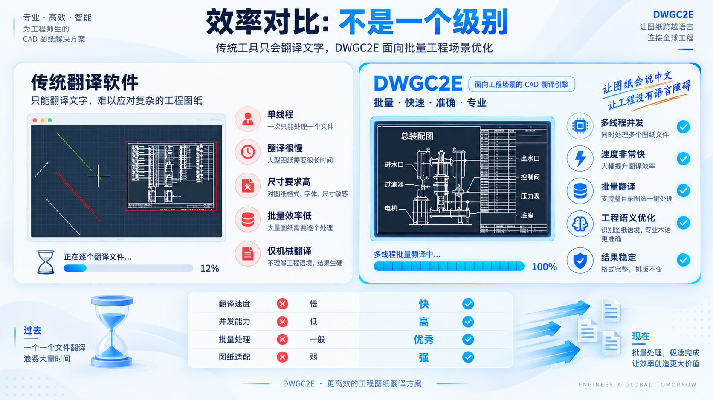
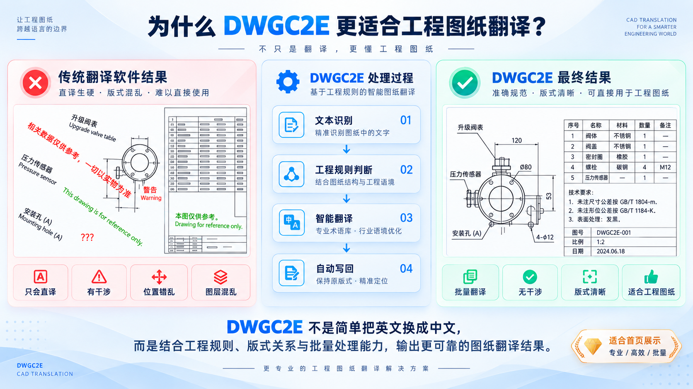
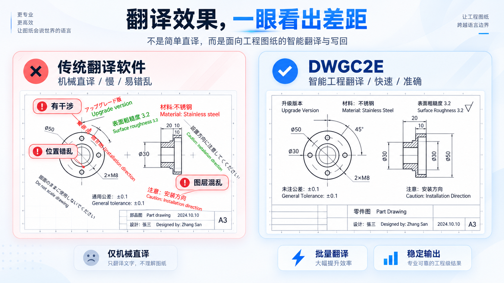

DWGC2E / ENGINEERING TRANSLATION STUDIO工程翻译手册 · VOL. 01
为认真画图的人，少一道语言工序。
图纸有边界，
沟通不必有。
让工程语言，回到图纸里。
在本地解析 DWG / DXF，借助 AI 翻译标注，
再把准确的表达写回原图。
DWG / DXFWindows 10 / 11V1.0.0
↳ 图纸留在本地，传递的是待译文字。
FIG. 01 / MOTOR BRACKET工程示意 · 非实际处理结果
零件 / 电机支架比例 1:2DWG → 中文
译文批注 / TRANSLATION NOTEMATERIAL: SUS304↳材料：SUS304
文字干涉检测 · 字高自动适配
本地解析
DWG
本地写回
精确的图纸，值得同样认真的表达。SCROLL TO EXPLORE ↓
图纸 · 术语 · 翻译 · 写回 ✳ DWG / DXF ✳
DWG 与 DXF 图纸解析、术语翻译及本地写回。
01 / THE CRAFT
少些重复工序，
多些工程本意。
不是把文字搬到另一种语言。
是让图纸，继续说清楚它想说的。
01DWG / DXF 本地解析读懂每一处标注。
从文字、尺寸、引线到块属性与表格，提取需要翻译的工程信息。
⌁02ENGINEERING LANGUAGE术语，不是逐字翻译。
结合工程上下文与专业术语，让材料、工艺和尺寸表达更准确。
Aa03BATCH PROCESSING一张，或一整套。
集中处理多张图纸，减少反复导入、复制与整理。
▤04WRITE BACK译文回到该在的位置。
在本地写回图纸，尽量保留位置、图层及格式，并适配文字高度。
↳ 留在本地，是工作方式。完整图纸默认无需上传。仅发送待翻译文本，解析与写回均在 Windows 客户端完成。
02 / ON THE DRAWING BOARD
翻译之后，
依然是一张好图纸。
检测文字与图层干涉，自动调整字高适配
写回图纸前，DWGC2E 会逐轮迭代检测文字与图形、文字与其他文字之间的干涉，
自动收敛到合适字号，在尽量不移动原始位置的前提下，让每一处标注依然清晰可读。
- 干涉检测文字与图形、文字与文字重叠自动识别
- 迭代适配多轮调整逐步收敛，避免一次缩放失真
- 位置保留不改变插入点与图层归属，方便后续修改
效果对比
点击图片看大图



WORKFLOW
四步完成图纸翻译
- 01⌁打开图纸选择 DWG / DXF
- 02⌕提取文字识别待译文本
- 03AI智能翻译工程上下文
- 04✓自动写回保存结果图纸
03 / YOUR WORKSHOP PASS
合适的工具，
按你的节奏使用。
先了解流程，再选择会员。
价格与权益，以购买页实时信息为准。
ENTRY PASS / 体验入口从第一张图纸开始。
下载 Windows 客户端，登录账户，了解本地解析、翻译与写回流程。
进入账户中心 ↗DWGC2E — START HEREWORKSHOP PASS / 会员方案给日常工作，多一份从容。
在套餐与订单页查看当前可购买方案、有效期和字符额度，核对后再选择。
查看实时套餐与价格 ↗DWGC2E — MADE FOR YOUR WORK
04 / FIELD NOTES
开工之前，
你可能还想问。
关于文件处理、兼容性、会员和翻译流程。
还没体验？先免费下载 →
这正是 DWGC2E 迭代算法解决的问题。写回前会逐轮检测文字与图形、文字与文字之间的干涉，自动调整字高逐步收敛，尽量在保留原始位置的同时让标注清晰可读；你仍可在软件中手动微调。
不会默认上传完整图纸。DWGC2E 主要在客户端本地解析 CAD 文件，仅将需要翻译的文本发送至翻译服务。
支持常见 DWG / DXF 格式，具体兼容版本以当前软件版本说明为准。
会尽可能保持文字位置、尺寸、图层及相关格式。重要工程文件仍建议保留原始备份。
客户端支持多文件批量处理；具体使用权益请以账户及当前套餐说明为准。
客户端支持维护专业术语，让企业和行业用词更统一。具体使用权益请以当前套餐说明为准。
05 / NEXT CHAPTER
下一张图纸，
不必困在语言里。
下载 DWGC2E Windows 客户端，在本地完成你的第一张 DWG / DXF 图纸翻译。